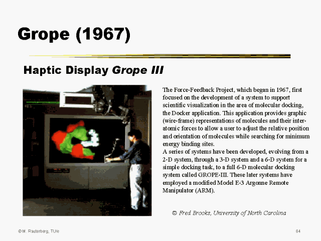

GROPE-III
The first force-feedback molecular docking system that let chemists physically feel electrostatic forces between drug molecules and protein receptors.

Overview
GROPE-III was a pioneering force-feedback molecular docking system developed at the University of North Carolina at Chapel Hill between 1988 and 1990. It represented the culmination of the GROPE project, which Frederick P. Brooks Jr. initiated in 1967 with the radical idea of adding a 'haptic display' — a computer display for the sense of touch — to scientific visualization.
The system repurposed an Argonne National Laboratory Model E-3 Remote Manipulator (ARM), originally built for handling radioactive materials in nuclear hot cells, as a 6-degree-of-freedom (6-DOF) haptic force display. A chemist would physically grasp the ARM's handle and manipulate a virtual drug molecule, feeling real-time electrostatic forces — steric repulsion, van der Waals attraction, and Coulomb forces — rendered as push/pull resistance as the drug approached a protein receptor site. This was combined with a stereoscopic 3D visual display showing wireframe molecular models.
Experiments demonstrated roughly a two-fold performance improvement over purely visual interaction for rigid-body molecular docking tasks. More importantly, chemists reported 'radically improved situation awareness,' developing a felt, physical intuition for why certain drugs docked well and others poorly — a qualitative leap in scientific understanding that visual-only tools could not provide. The work was presented in a landmark technical paper at SIGGRAPH 1990 and remains foundational to all modern haptic rendering systems.
Deep dive
The GROPE project began in 1967 when Frederick P. Brooks Jr., newly arrived at UNC Chapel Hill to found the computer science department, envisioned combining Ivan Sutherland's concept of 'the ultimate display' with the sense of touch. Brooks believed that interactive computer graphics would be far more powerful if scientists could not only see but also feel their data. The project evolved through four stages: a 2-D system (GROPE-I, 1971), a 3-D system tested with a simple docking task, a 6-D system for a simple peg-in-hole task, and finally GROPE-III — a full 6-DOF molecular docking system achieving the original vision. James J. Batter built GROPE-I as his master's thesis project, using a 2-D pen-plotter-like mechanism to display force fields of interacting protein molecules. P. Jerome Kilpatrick's 1976 PhD dissertation explored kinesthetic supplementation for interactive systems using a 3-D system. Ming Ouh-Young's 1990 PhD dissertation, 'Force Display in Molecular Docking,' represented the definitive achievement: a complete 6-DOF haptic molecular docking system that was actively used by research chemists and produced genuine chemistry results.
The centerpiece of GROPE-III was a modified Argonne National Laboratory Model E-3 Remote Manipulator (ARM) — a master-slave teleoperator originally designed by Raymond Goertz in the 1950s for handling radioactive materials behind protective shielding. This device provided true 6-DOF force feedback (3 translational + 3 rotational) with a large workspace suited to arm-scale interaction. The ARM was mechanically backdriveable, meaning forces applied by the computer's motors could be felt by the user gripping the handle. A VAX 11/780 minicomputer running the UNIX operating system computed intermolecular forces in real time — calculating electrostatic potentials, van der Waals energies, and steric clashes between drug molecules and protein receptor sites using force-field parameters. The system also featured a stereoscopic 3D visual display showing wireframe models of the molecules, giving the chemist both visual and haptic feedback simultaneously.
A chemist using GROPE-III would grasp the ARM's handle and see a wireframe representation of a drug molecule on the stereoscopic display. By physically moving the handle, the chemist could translate and rotate the drug relative to a protein receptor site. As the drug approached the protein's active site, the system computed intermolecular forces in real time and activated the ARM's motors to resist or assist the user's motion. Electrostatic attraction would pull the drug toward favorable regions, while steric clashes (atoms trying to occupy the same space) would produce hard repulsive forces. van der Waals forces provided subtle attractive or repulsive cues. The chemist could feel the combined force field guiding the drug toward low-energy binding configurations. The key insight was that humans using their kinesthetic sense could navigate complex 6-DOF energy landscapes far more intuitively than with pure visual feedback — they could 'feel their way' to good docking solutions.
GROPE-III was never commercialized as a product. It remained a research prototype in UNC's computer science department, used actively by collaborating research chemists to study real drug-docking problems. The ARM manipulator was large, expensive, and mechanically complex, making it impractical for widespread deployment. However, the project's findings directly influenced the subsequent development of commercial haptic devices: the PHANToM (SensAble Technologies, 1993), the Novint Falcon, and the Force Dimension Omega and Delta devices all descend conceptually from GROPE's pioneering demonstration that force feedback dramatically improves 3D interaction. Brooks' 1990 SIGGRAPH paper presciently observed that 'entertainment, not scientific visualization, will drive and pace the technology' — a prediction borne out by haptic feedback becoming standard in game controllers, smartphones, and VR systems decades before it became common in scientific computing.
GROPE-III established the field of haptic rendering and proved several principles now considered foundational: (1) haptic display as augmentation to visual display improves perception and understanding of both force fields and world models populated with impenetrable objects; (2) haptic-augmented interactive systems give roughly a two-fold performance improvement over purely graphical interactive systems for spatial docking tasks; (3) the most valuable result is 'radically improved situation awareness' — users develop a felt, embodied understanding of data that visual-only tools cannot provide. The project also demonstrated that repurposed teleoperator hardware could serve as high-fidelity haptic interfaces, establishing a tradition of adapting industrial robotics for HCI research. GROPE's four-stage, incremental-evaluation methodology — 2-D, then 3-D simple task, then 6-D simple task, then full application — became a model for haptics research. The 1990 SIGGRAPH paper has been cited thousands of times and remains required reading in haptics, scientific visualization, and human-computer interaction curricula. GROPE-III directly inspired SensAble's PHANToM, the UNC NanoManipulator, and the entire field of 6-DOF haptic rendering.
Team & pioneers
- Frederick P. Brooks Jr.. Project founder and leader; conceived the GROPE project in 1967; founding chair of UNC Computer Science
- Ming Ouh-Young. Lead developer of GROPE-III; PhD dissertation 'Force Display in Molecular Docking' (1990); designed the 6-DOF molecular docking application and ran user studies
- James J. Batter. Built GROPE-I (1971), the 2-D force-feedback precursor; co-author on GROPE-I paper and the 1990 SIGGRAPH paper
- P. Jerome Kilpatrick. Built the 3-D force display system; PhD dissertation 'The Use of Kinesthetic Supplement in an Interactive System' (1976)
- Joseph J. Capowski. Early contributor; 1971 MS thesis on remote manipulators as computer input devices
- Mike Pique. Contributed to the 1988 IEEE Robotics and Automation paper on using a manipulator for force display in molecular docking
- Greg Turk. Developed interactive collision detection for molecular graphics used in the system; later known for the Phong shading model
Media

Sources
- Brooks Jr., Ouh-Young, Batter, Kilpatrick. 'Project GROPE: Haptic Displays for Scientific Visualization.' SIGGRAPH 1990 Technical Paper. Computer Graphics, Vol. 24, No. 4, pp. 177–185.
- SIGGRAPH History Archives: Project GROPE entry with abstract, authors, and references
- Ouh-Young, Ming. 'Force Display in Molecular Docking.' PhD Dissertation, UNC Chapel Hill Computer Science Department, 1990. Tech Report 90-004.
- CISMM (UNC): Simulated Drug Docking — describes the Docker application, haptic feedback approach, and experimental results
- Batter, J.J. and Brooks, F.P. Jr. 'GROPE-I: A Computer Display to the Sense of Feel.' IFIP Congress 71, pp. 759–763.
- Ouh-Young, M., Pique, M., Hughes, J., Srinivasan, N., Brooks, F.P. Jr. 'Using a Manipulator for Force Display in Molecular Docking.' Proc. IEEE Robotics and Automation Conference, 1988, pp. 1824–1829.
- Kilpatrick, P.J. 'The Use of Kinesthetic Supplement in an Interactive System.' PhD Dissertation, UNC Chapel Hill, 1976.
- Rauterberg HCI History Slides: Grope (1967) — describes evolution from 2-D to full 6-D GROPE-III system